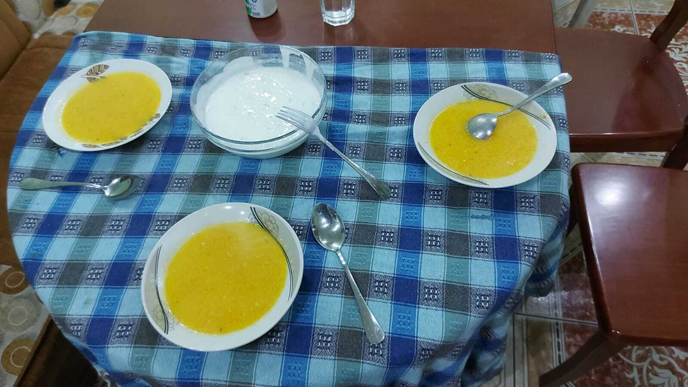

Supa Ronit

Supa Ronit: e shëmtuar por shumë e shëndetshme.
Kjo gjellë dimri kërkon më shumë kohë se pilafi i Ustait, por është më e lirë se vioneza.
Specialisti Roni I Kozares por gatuhet edhe nga Ustai i Pilafit dhe një version më i moderuar nga Xho Kakashi.
Mund të shoqërohet me kos.
Përbërësit
- Karota
- Qepë
- Brokoli
- Patate
- Lulelaker
- Galina pule
- Domate
- Ujë
- Hudhër
- Bizele
- Panë
Përgatitja e Recetës
- Grijim të gjithë përbërësit.
- I skuqim në tenxhere.
- I shtojmë ujë.
- I hedhim 2 galina.
- E lem të ziejë sa të shtypen patatet.
Kthehu te faqja kryesore